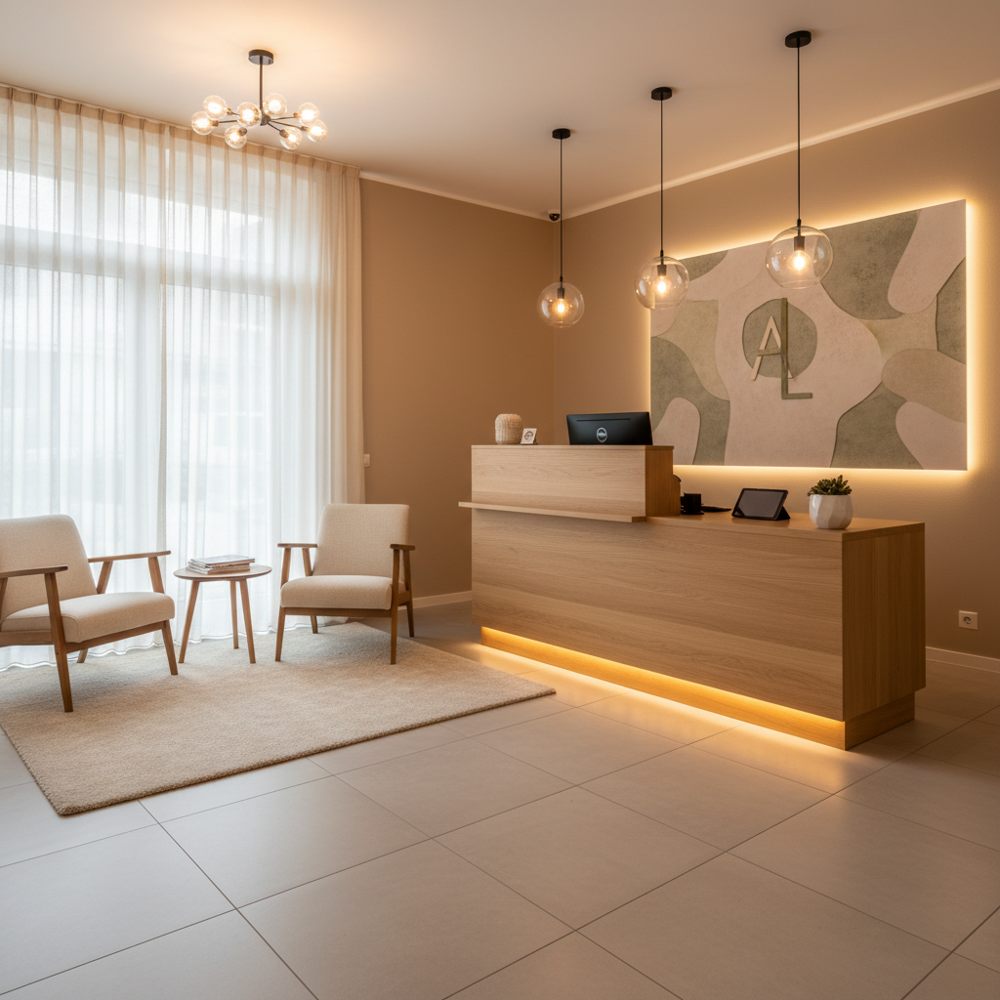

Einfach und unkompliziert
Termin vereinbaren: Ihr Weg zu gesunden Füßen
Manchmal ist der beste Zeitpunkt 'jetzt'. Wir finden den passenden Zeitpunkt für Ihre podologische Behandlung.
Ihr erster Besuch: Gut vorbereitet
Damit Ihr erster Termin reibungslos verläuft, haben wir hier einige wichtige Hinweise für Sie zusammengefasst.
Um Ihnen die bestmögliche Behandlung zu gewährleisten, bitten wir Sie, zum ersten Termin eventuell vorhandene ärztliche Verordnungen, relevante medizinische Unterlagen oder eine Liste Ihrer aktuellen Medikamente mitzubringen. Planen Sie für Ihren ersten Besuch etwas mehr Zeit ein, da wir eine ausführliche Anamnese durchführen.
- Ärztliche Verordnungen mitbringen
- Relevante medizinische Unterlagen bereithalten
- Liste der aktuellen Medikamente
- Etwas mehr Zeit für den ersten Termin einplanen
